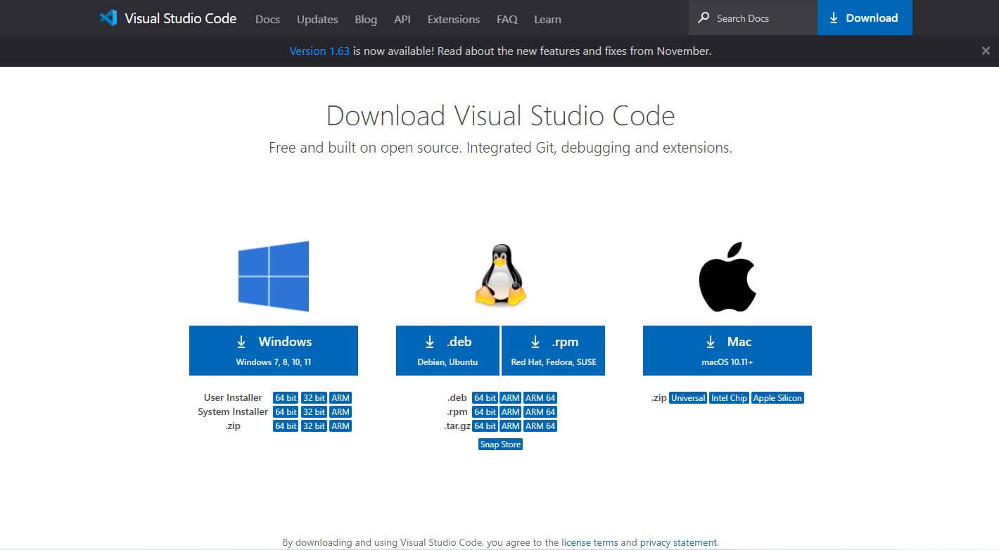
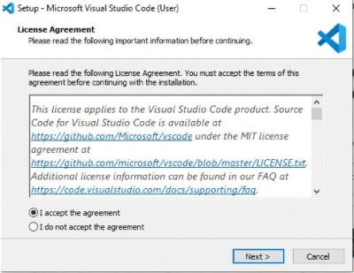
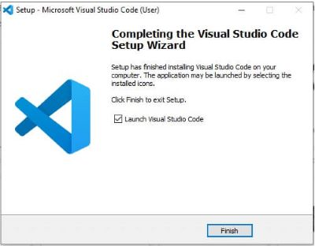
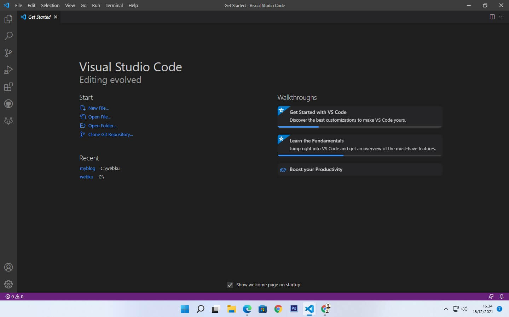
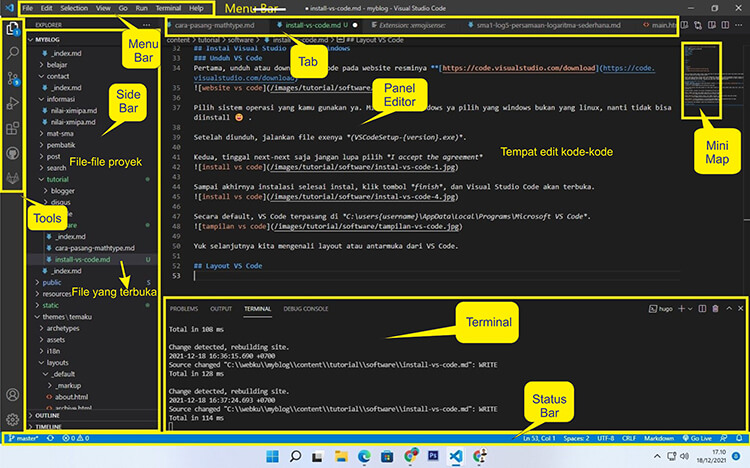

Download Dan Install Visual Studio Code Di Windows
Apa itu Visual Studio Code? Visual studio Code atau VS Code adalah software text editor atau editor kode sumber buatan Microsoft yang bisa kita dapat secara gratis.
Ketika saya mulai belajar tentang coding saya menggunakan Notepad++ dan akhirnya menemukan software Visual Studio Code yang nampaknya lebih mantep. Oke, kali ini saya akan membagikan bagaimana menginstall VS Code di Windows dan pengenalan antarmuka dari VS Code. langsung saja yuuk ikuti langkah-langkah berikut.
Instal Visual Studio Code di Windows
Instal Visual Studio Code di Windows
Pertama, unduh atau download VS Code pada website resminya
https://code.visualstudio.com/download↝ Pilih sistem operasi yang kamu gunakan ya. Misal pakai windows ya pilih yang windows bukan yang linux, nanti tidak bisa diinstall
Setelah diunduh, jalankan file exenya (VSCodeSetup-{version}.exe).
Kedua, tinggal next-next saja jangan lupa pilih I accept the agreement
Sampai akhirnya instalasi selesai instal, klik tombol finish, dan Visual Studio Code akan terbuka.
Secara default, VS Code terpasang di C:\users{username}\AppData\Local\Programs\Microsoft VS Code.
Yuk selanjutnya kita mengenali layout atau antarmuka dari VS Code.
Layout VS Code
Visual Studio Code adalah untuk editor kode. Seperti kebanyakan editor kode lainnya, VS Code mengadopsi antarmuka pengguna standar dan explore di sebelah kiri, menampilkan semua file dan folder yang dapat kamu akses. Di bawah ini layout pada VS Code:
- Panel Editor - Ini adalah area utama untuk mengedit file kamu. Kamu dapat membuka editor sebanyak mungkin secara berdampingan secara vertikal dan horizontal.
- Side Bar - Berisi tampilan seperti Explorer untuk membantu kamu saat mengerjakan proyek kamu.
- Status Bar - Ini berisi informasi tentang proyek yang dibuka dan file yang kamu edit.
- Tools - Terletak di sisi paling kiri. Ini memungkinkan kamu beralih di antara tampilan dan memberi kamu indikator khusus konteks tambahan, seperti jumlah perubahan keluar saat Git diaktifkan.
- Terminal - Menampilkan terminal yang berbeda di bawah wilayah editor untuk output atau informasi debug, kesalahan, dan peringatan, atau terminal terintegrasi. Selain itu, terminal juga dapat digeser ke kanan untuk mendapatkan lebih banyak ruang vertikal. Terminal ini sangat berguna jika kita ingin menjalankan suatu kode.